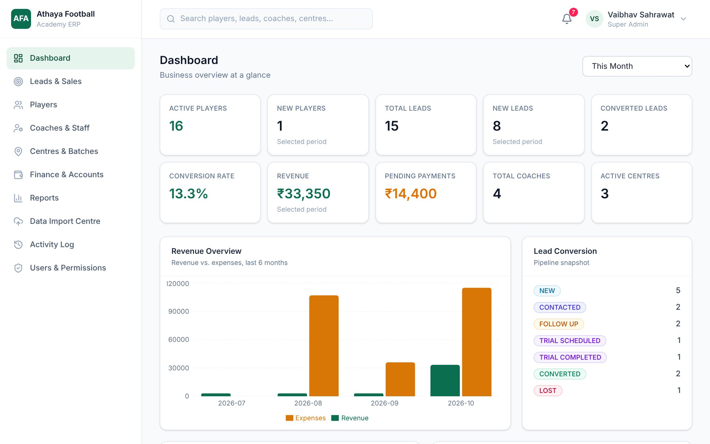

Product Manager, Athaya Football Academy, 2026
Athaya ERP: from manual records to one connected system
Enquiries, players, coach assignments and fees were all tracked by hand, so nothing connected. I interviewed the owner, wrote the requirements, designed the screens, and directed a developer through the build.
- 8+societies
- 5areas, one system
- 9report types
What the system does and how I scoped it
What the system does
- Leads pipeline from new enquiry through trial to converted, with one-click convert-to-player
- Centre, batch, coach, players: a structure that matches how the academy runs
- Fee tracking where each payment updates the player's status and flows into Finance
- An import centre that brings in existing Excel sheets and catches duplicates by phone number
How I scoped it
- One system instead of five separate tools, so the same record carries from enquiry to player to payment
- I asked for per-person permissions and an activity log of who changed what, so staff can be given access safely
- I kept Version 1 small: no payroll, tax automation, attendance analytics or parent app. These can be added later
Screens show the system's built-in sample data, not real players or families. My part was product: requirements, UX, prioritisation, operational requirements and the SOPs staff follow. A developer on the team wrote the code and handled deployment.